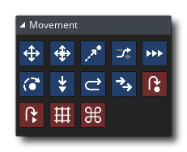

En cualquier juego, el movimiento y la posición son de suma importancia, por lo que GameMaker Studio 2 tiene una selección completa de acciones para hacer frente a cada situación. Las dos formas principales de mover una instancia es establecer la posición real (x / y) dentro de la habitación o establecer un vector de velocidad / dirección. Las acciones que se muestran aquí cubren ambos métodos y puede usar la Variable de asignación de acción común para establecer directamente la posición xey.
Las acciones del Movimiento disponibles son las siguientes: